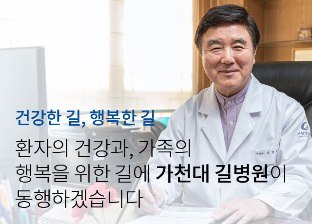

병원소개
가천대 길병원을 소개 합니다.

가천대 길병원은 1958년 설립자 이길여 회장(현 가천 대학교 총장)이 인천시 중구 용동에 산부인과의원을 개원한 것 에서 출발하였습니다.
의료를 통해 ‘박애, 봉사, 애국’을 실천하고자 한 의사 이길 여는 작은 산부인과에서 큰 꿈을 꾸었습니다. 그가 경험한 미국, 일본 등 선진 의료를 고국의 환자들이 받을 수 있도록 시설, 장비 투자를 아끼지 않았습니다.가천대 길병원은 그런 길을 걸어왔습니다.우리 병원을 찾은 환자들이 최고의 치료를 받게 하자, 환자를 살리는 일로 나라에 봉사하자,가슴 따뜻한 인재를 양성해 국가에 기여하자는 목표는 한번도 흔들리지 않았습니다.
오늘날 가천대 길병원은 진료, 연구, 교육 등 모든 분야에서 최고의 성과를 써내려가는 병원으로 성장하고 있습니다. 암, 심뇌혈관, 만성질환, 외상, 응급 등 각 진료분야에서 객관적 지표들이 최상급으로 평가 받고 있습니다.
또 국내 의료기관 최초(2016년)로 인공지능을 암진료에 도입하여 환자들에게 글로벌 수준을 넘어선 암 치료를 제공하고 있습니다. 최첨단 진단장비인 7.0T MRI를 우리 기술로 개발한 것에 만족하지 않고, 11.74T MRI의 개발에 도전하고 있습니다. 국내 10개 연구중심병원 중 핵심 3대 기관으로 선정돼 뇌영상진단과 만성질환 분야에서 독보적인 연구 결과를 창출하고 있습니다.앞으로의 길도 다르지 않습니다.우리 병원을 찾은 환자들께 글로벌 수준의 최고의 의료서비스를 제공하고, 나아가 질병의 극복과 예방을 위한 연구 활동에도 집중할 것입니다. 언제나 환자, 고객들을 먼저 생각하고, 의료 서비스로 인류 발전에 기여한다는 각오로 최선을 다하겠습니다.
감사합니다.
의료를 통해 ‘박애, 봉사, 애국’을 실천하고자 한 의사 이길 여는 작은 산부인과에서 큰 꿈을 꾸었습니다. 그가 경험한 미국, 일본 등 선진 의료를 고국의 환자들이 받을 수 있도록 시설, 장비 투자를 아끼지 않았습니다.가천대 길병원은 그런 길을 걸어왔습니다.우리 병원을 찾은 환자들이 최고의 치료를 받게 하자, 환자를 살리는 일로 나라에 봉사하자,가슴 따뜻한 인재를 양성해 국가에 기여하자는 목표는 한번도 흔들리지 않았습니다.
오늘날 가천대 길병원은 진료, 연구, 교육 등 모든 분야에서 최고의 성과를 써내려가는 병원으로 성장하고 있습니다. 암, 심뇌혈관, 만성질환, 외상, 응급 등 각 진료분야에서 객관적 지표들이 최상급으로 평가 받고 있습니다.
또 국내 의료기관 최초(2016년)로 인공지능을 암진료에 도입하여 환자들에게 글로벌 수준을 넘어선 암 치료를 제공하고 있습니다. 최첨단 진단장비인 7.0T MRI를 우리 기술로 개발한 것에 만족하지 않고, 11.74T MRI의 개발에 도전하고 있습니다. 국내 10개 연구중심병원 중 핵심 3대 기관으로 선정돼 뇌영상진단과 만성질환 분야에서 독보적인 연구 결과를 창출하고 있습니다.앞으로의 길도 다르지 않습니다.우리 병원을 찾은 환자들께 글로벌 수준의 최고의 의료서비스를 제공하고, 나아가 질병의 극복과 예방을 위한 연구 활동에도 집중할 것입니다. 언제나 환자, 고객들을 먼저 생각하고, 의료 서비스로 인류 발전에 기여한다는 각오로 최선을 다하겠습니다.
감사합니다.
가천대 길병원장 김양우